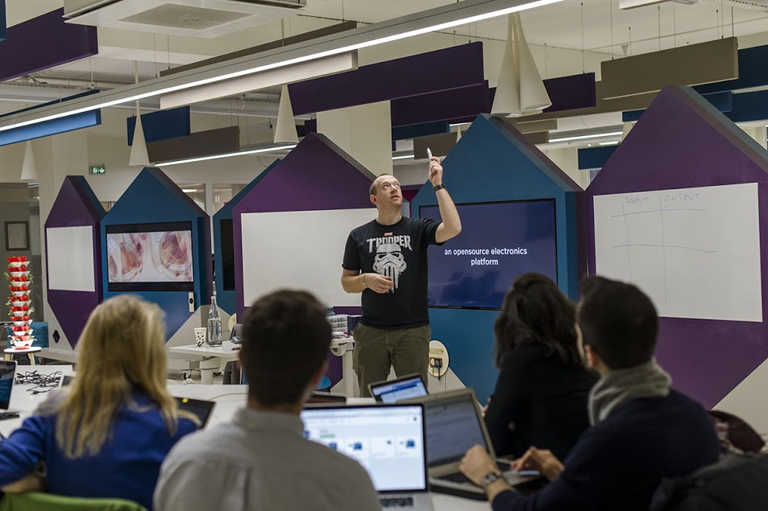

Le programme :
La toile, c’est un programme intensif de 9 semaines dédiée aux personnes sans qualification ou éloignées de l’emploi. Vivez une immersion dans un des makers’ lab de l’emlyon business school et apprenez par la pratique des compétences numérique recherchées. Ce programme, en phase avec les besoins des entreprises, vous permettra d’acquérir les qualifications de base dans les métiers du numérique afin de favoriser votre insertion ou réinsertion professionnelle. Elle est 100% gratuite!
Vous avez le choix entre quatre parcours - conception web · fabrication numérique · objets connectés · intelligence artificielle - comprenant chacun :
- • Une formation de 136h au makers' lab accompagnée par des professionels et les équipes de la toile.
- • Un accompagnement carrière individualisé pour construire son projet professionel et savoir se présenter.
- • Des rencontres avec des entreprises et des recruteurs du secteur.

Candidatez :
Pour candidater, rien de plus simple! Il vous suffit de remplir le formulaire suivant et nous vous recontacterons très vite.